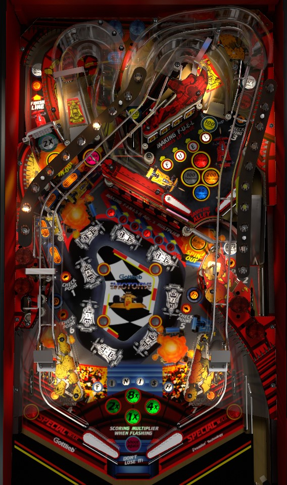

The intended progression on Victory is pretty heavily outweighed by the value of a lit spinner. Lit spinners, which alternate on slingshot hits, score 10,000 points per spin. The left spinner orbit shot feeds the right in lane, which briefly lights the left spinner for 2x value, so if it's lit twice, that's 20,000 per spin on a shot that can be looped. Further, completing the Finish standup targets in the center advances the game's multiplier; the multiplier is applied to all playfield scoring for approximately 25 seconds after making any flashing Checkpoint shot, which compounds the spinner value further.
There is no skill shot on Victory. A full plunge is intended to curve across the table, go up the left orbit spinner lane, land in the back center kicker, and be kicked to the right in lane. On physical tables, this does not always happen; the ball may choke up near the left spinner and fall back to the main playfield. You can also short plunge to get the ball on a flipper sooner.
Victory tasks players with making 8 shots in order around the playfield to complete races.
Immediately after making a Checkpoint shot (or immediately after any playfield switch is hit, if it's the beginning of the game or a race was just completed), a hurry-up score is available by shooting the next Checkpoint shot within about 25 seconds. For the first race, the hurry-up's starting value is 100,000 points times the number of the Checkpoint you're aiming for. The first race's Finish Line hurry-up, as well as any Checkpoint hurry-up after one full race has been completed, starts at 800,000 points. If the hurry-up expires, you still need to shoot the next Checkpoint in the sequence to start the next hurry-up. If the indicated Checkpoint is shot with no hurry-up running, the next Checkpoint will be lit and ready immediately. If the hurry-up had not yet expired, you need to wait a couple seconds for the game to do a short celebration and add the hurry-up to your score before the next Checkpoint is available.
Hit a flashing center standup to light that letter in the word Finish. In 3-ball play, Finish targets score 500 points when lit or 3,000 when flashing; in 5-ball play, this is reduced to 100 when lit and 1,000 when flashing. Collecting all 6 letters in the word Finish resets the sequence and adds 1 to the multiplier shown between the flippers. The multiplier is carried over from ball to ball and maxes out at 15x. Whenever a Checkpoint hurry-up is running, the multiplier near the flippers will flash; while it is flashing, all playfield scoring is multiplied by the earned multiplier, with the only exceptions being the Checkpoint hurry-up value and the flat 500,000 points earned for scoring an extra ball or special in competition/novelty play. The end of ball bonus is also equal to 10,000 points times the earned multiplier for each Checkpoint collected in the current race only. The Finish targets do require a fair number of shots and there is no way to spot the letters, but you're likely to get most of them through regular gameplay and will only need to consciously shoot for one or two of them per set yourself.
Completing 1 or 2 races, depending on game settings, lights the out lanes alternately for Special based on slingshot hits.
One of the two spinners is lit yellow at any given time. Spinners lit yellow score 10,000 points per spin, while unlit spinners score 500 points per spin. Slingshots, as well as some miscellaneous switches in the game such as the back center kicker, alternate which spinner is lit. The right in lane lights the left spinner for 2x value for about 5 seconds, making it worth 20,000 points per spin if lit white and yellow or 1,000 per spin if only lit white. All possible values for both spinners are multiplied by the playfield multiplier if a Checkpoint hurry-up is running, so in the late game, a lit spinner can score 100,000 points per spin or more- far more lucrative than anything else in the game. If you get in a rhythm of looping the left spinner shot, you'll be on your way to a great score, since the left spinner eventually feeds the right flipper for a repeatable shot.
Make the Checkpoint 1 shot in such a way that the ball crosses in front of the left spinner and lands in a saucer near the X-Tra Ball insert to score and advance the lane's lit value, making progress toward Extra Ball. This crossover shot scores 50,000, then 100,000, then 150,000, then 200,000; collecting the 200,000 point shot lights extra ball. On easy settings, the value of the crossover shot is preserved from ball to ball, but once extra ball is lit, it alternates between the crossover shot and the upper playfield right orbit. On hard settings, the value of the crossover shot is reset each ball, but when extra ball is qualified, it will be lit at both the crossover and the upper playfield right orbit.
If you collect extra ball at the upper playfield right orbit, it serves as a conventional extra ball, which is plunged from the shooter lane after the bonus is counted. If you collect extra ball at the crossover shot, the ball used to make that shot will stay locked in its saucer, and a new ball will be fed to the shooter lane; when the new ball drains, the locked ball is kicked out and play continues. This lock-and-automatic-release setup serves as a one-time ball save, similarly to the extended play kickout from the back lock on Barracora (Williams, 1981). There is no multiball on Victory; the two balls cannot both be in play at the same time. There is no indicator that a ball is locked at the crossover shot, so you'll just have to keep in mind that one is there; don't walk away after draining the ball if one has been locked.
Use the upper playfield's mini-flippers to spell Fuel in order at the drop targets. Drop targets score 500 points when unlit or solidly lit, or 3,000 when flashing (adjusted to 100 when unlit or solidly lit and 1,000 when flashing in 5-ball play). Hit the flashing target to light it solidly. Solidly light the whole word Fuel to score and advance the value displayed on the upper playfield, which goes in the sequence 50,000 - 100,000 - 200,000 - Special. The Special is only lit for about 5 seconds before it reverts to the 200,000 value, so you need to be very fast with the 4th spelling of Fuel to earn the Special. The drop target bank only resets when all 4 are knocked down or when Fuel is spelled in its entirety, so you may need to intentionally shoot non-flashing drop targets just to have a chance to shoot a flashing one again. The lit value for completing the word Fuel resets at the start of each ball.
(On 5-ball settings, the upper playfield will start with no reward inserts lit; completing Fuel the first time scores 10,000 points, and the second completion scores 50,000 and begins the sequence as normal.)
Certain completions of the Fuel targets cause the left spinner and upper playfield right orbit to briefly be lit to collect the Race Bonus end-of-ball bonus value. This seems rare and I'm not certain what triggers it. This tends not to be particularly meaningful.
In addition to slingshots switching which spinner and which out lane are lit, slingshots also determine whether the upper playfield ramp or the back center kicker is lit for 100,000 points (back center kicker scores 1,000 unlit, and upper playfield ramp scores 3,000 unlit), as well as whether the lower left or lower right standup target is lit for 10,000 points instead of 1,000.
Victory has a conventional in/out lane setup. In lanes score 500 points and, when flashing, award Checkpoint 4 (left) or 7 (right). The right in lane also lights the left spinner for 2x value for a few seconds. Out lanes score 10,000 points plus a special when lit. Slingshots score 30 points.
Bonus is calculated as 10,000 points, plus an additional 10,000 for each Checkpoint cleared in the current race only, all times bonus multiplier. Bonus multiplier is advanced one at a time toward its maximum of 15x with each completion of the Finish 6-bank of center standup targets. Especially when focused on a lit spinner strategy, end of ball bonus tends not to be meaningful.
The opening back to the shooter lane is wide open in the very lower right of the playfield, so a ball that is nudged or approaches the out lane with a certain angle may instead fall back into the shooter lane for a replunge.
In competition/novelty play, extra balls and specials score 500,000 points.